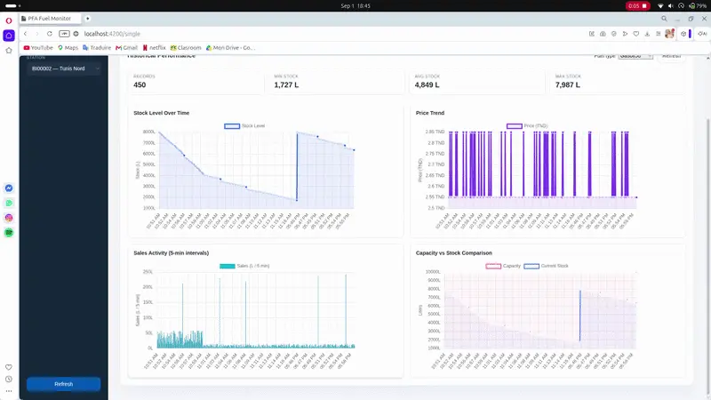
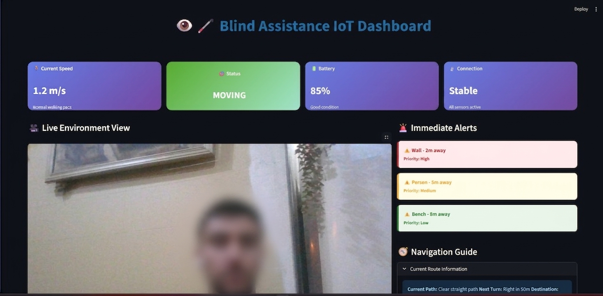
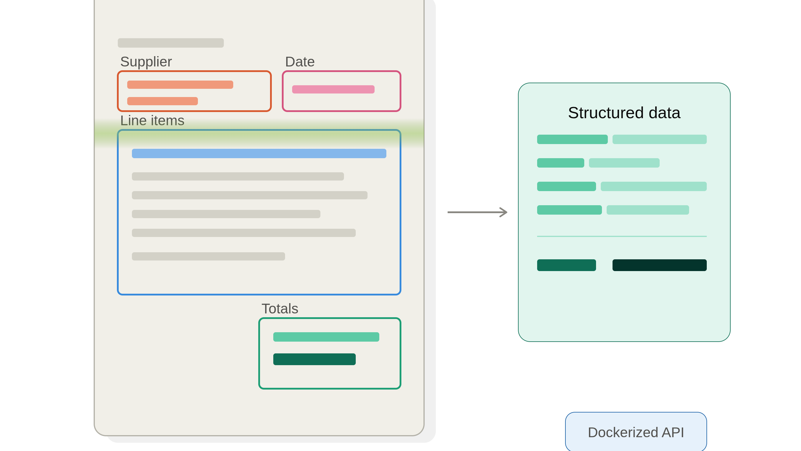
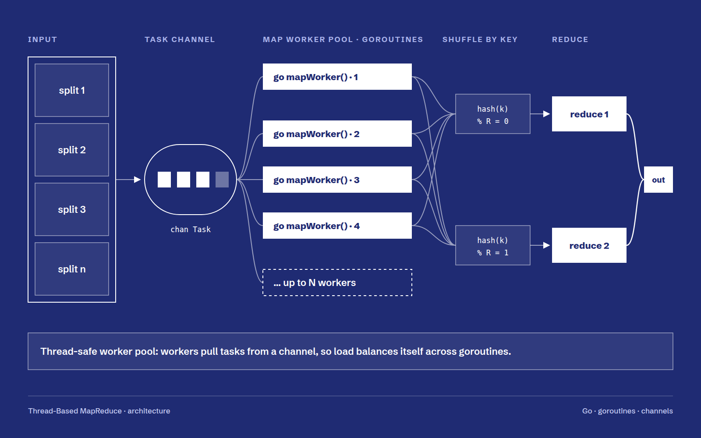

Work
Things I've built
Six personal projects across data, backend, and computer vision — each one taught me something the previous one didn't. See the Experience section for internship work.

Full-stack monitoring platform for AGIL fuel stations. Real-time telemetry ingestion, automated critical alerts, Prophet-based stock forecasting, and a Groq-powered AI chat assistant with RAG over historical alert data — all behind an Angular dashboard.

End-to-end Business Intelligence platform consolidating multi-source education and research data. A modular Python ETL pipeline (Foundation → Research Mart → Education Mart, dependency-aware orchestration) loads a star-schema PostgreSQL data warehouse, exposed through a Django REST API with a React frontend and Streamlit dashboards — fully containerized with Docker and run via automated CI/CD on GitHub Actions.

Wearable assistive system for the visually impaired. An ESP32 reads ultrasonic and PIR sensors for real-time haptic alerts, while a Raspberry Pi runs YOLO object detection and Apple DepthPro estimates metric distances — all streamed to a live Streamlit dashboard.

Containerized document intelligence API for automated invoice processing. YOLOv5 detects invoice regions (supplier, date, totals, tables), Tesseract extracts the text, and an optional Donut model handles end-to-end document understanding — served via FastAPI and shipped as a Docker image.

Concurrent MapReduce framework built from scratch in Go. A thread-safe worker pool distributes map and reduce workloads across goroutines via channels, with benchmarked speedup over single-threaded execution on large-scale processing workloads.

Fraud detection pipeline for highly imbalanced financial datasets using supervised machine learning. Applied SMOTE and undersampling strategies, improving minority-class F1-score by 25% and enhancing overall model robustness. Evaluated classification performance using AUC-ROC, F1-score, and confusion matrix analysis.